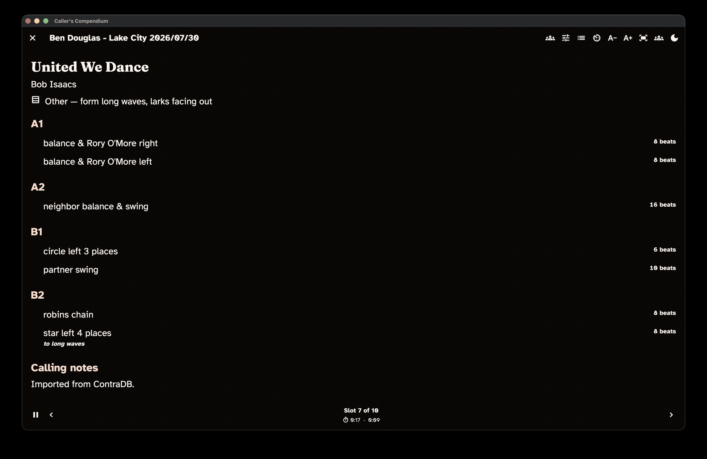

Perform mode
Perform mode is the app's stage-ready calling view. This guide covers calling a single dance or a whole program, sizing the text so it is readable from a distance, moving through your evening, keeping time, and making changes on the fly without losing your place.
Finding your way around these words. On-screen buttons and screens are written in bold — like Perform this dance and Perform this program. The first time a dance term appears it links to the Glossary, so you can get a plain-language definition without losing your place.
New to the app? Start with the Getting started guide.
Enter Perform mode
Perform mode is not a navigation tab — you step into it when it is time to call, and step back out deliberately when you are done. It fills the whole screen.
- To call a single dance, open it from your collection and choose Perform this dance.
- To call a whole evening, choose Perform this program in the program editor or on the program's summary.
When you exit, the app takes you back to wherever you came from.
Perform mode in the dark-stage theme, with large type and controls for moving through the program.

Read the card
Perform mode shows one dance at a time in very large type, with the figures grouped by section (A1, A2, B1, B2) and set in a typeface built to be read from a distance.
Above the figures, the card shows the dance's title, choreographer, formation, and level; below them come the dance's calling notes. The figure where the progression happens is marked with an icon labelled Progression. Break and note slots in a program get a card of their own, with the text in the same large type.
Your dialect is applied — or the program's own dialect, if you gave it one (see Programs) — so the card speaks in your words (see Show canonical terms below for a quick look at the shared wording). Figure detail you recorded shows here too: when a swing ends facing somewhere other than the usual "in"/across — up or down the hall, or out of the set — the card notes that ending so you can cue it.
Set the stage
A row of controls along the top shapes the calling view itself. On a tablet or a desktop they all sit there as buttons. On a phone, only Switch dialect and the Stage theme toggle stay out — the rest tuck into a More actions menu so the toolbar can't crowd a narrow screen. Wherever a control lives it does the same thing, and every toggle says which state it is in rather than relying on how it looks.
Switch dialect. Changes your active dialect for the whole app — handy when tonight's hall uses different role names. If the program has its own dialect, the switch changes the wording for this time in Perform only: your active dialect stays as it was, and the program's dialect is back the next time you open Perform. See Dialect.
Stage theme. Perform opens on a high-contrast dark-stage theme by default, built for strong legibility (a contrast ratio of at least 7 to 1) under stage lighting. Toggle it off to fall back to your usual app theme. Its tooltip reads Stage theme on — tap to use app theme or Stage theme off — tap for dark stage, so there is no guessing, and it stays where you put it — next time too.
Auto-size text to screen. Out of the box this is on: the card scales so the current dance's full text fits the screen without scrolling, recomputing whenever you move to a new dance or slot, rotate the device, or resize the window. So the text is always as large as it can be while still fitting. It starts however you set Auto-size Perform cards in Settings › Program › Performance, and the in-view toggle flips it until you leave Perform.
A− and A+. The Decrease text size and Increase text size controls step the size down and up, starting large with no upper limit. Using either one switches auto-size off, because you have told the app what size you want. The size you pick is remembered for next time; auto-size goes back to your Settings choice the next time you open Perform.
Show canonical terms. Flips the card between your dialect and the shared wording without changing your active dialect — handy if a dancer or another caller asks about a figure. Your choice is remembered. It appears only when you are using a dialect other than the shared wording. See Dialect.
Tap tempo opens a silent, visual metronome: tap out the beat on the large target to see the tempo in beats per minute and a pulse you can follow or show the band. Show walkthrough — which appears when the dance has a walkthrough written — lays it over the card until you close it.
Caller notes. When you perform a program, a slot's caller note appears above the dance title, labelled Caller note. To hide these, turn off Show caller notes in program Perform in Settings › Program › Performance. The note is for your eyes only: it does not change the dance's own calling notes, search, or exports.
The screen stays awake
While you are in Perform mode, the app keeps the screen awake, so a propped-up tablet will not dim or sleep partway through a dance. The moment you exit, the screen is free to sleep as normal again.
Move through a program
When you are performing a program, step through your slots with whichever control suits you and your setup:
- the Previous slot and Next slot buttons at the bottom of the screen;
- the giant edge hit zones — tap the left edge to go back, the right edge to go forward — easy to hit without looking; or
- the arrow keys or Page Up / Page Down on a keyboard.
While the walkthrough overlay is open, none of these change your slot: taps on the card are absorbed, the up, down, Page Up and Page Down keys scroll the walkthrough itself, and Esc closes it — so reading ahead can't move you off the dance you are calling.
Between the two buttons, Slot N of M shows where you are. A dance and its alternates count as one slot, so stepping forward skips past the alternates.
Jump to slot lists the whole program so you can go anywhere at once — useful if plans change mid-evening. When the current slot has an alt, Show alternate switches the card to it (and on through any others, then back to the primary). This only changes what you are looking at; the program itself stays as it is.
If a dance in your program has been deleted, its slot still shows the figures as long as the dance is in Recently deleted, and both the card title and Jump to slot mark it "(deleted dance)". A dance that no longer exists at all shows "Dance unavailable" instead; your note for that slot, if you have notes turned on, appears underneath.
Keep time through the evening
Perform mode shows timing in a status area so you can pace yourself. For a single dance, it shows:
- an elapsed timer for the dance; and
- a pause/resume control for interruptions.
For a program, the status area additionally shows:
- a running program clock for the whole evening;
- a per-slot elapsed timer that resets each time you move to a new slot;
- the slot's planned length, when you have set one, shown as planned N min (W:D) — where W is the walkthrough minutes and D is the dance minutes;
- once the slot's walkthrough minutes have passed, the words walkthrough complete, with a running-figure icon;
- once the walkthrough and dance minutes together have passed, the word over, with a timer icon; and
- a Pause timers button (Resume timers while paused) that freezes both clocks for interruptions; and
- when the slot has a walkthrough length, a round dance-start button (a music note) at the end of the readout.
Mark when the walkthrough really ended
Walkthroughs rarely run to the clock. When a slot has a walkthrough length, tap the dance-start button the moment the dancers actually start dancing. Its tooltip reads "Walkthrough done — start the dance"; once marked it becomes a filled circle and reads "Dance started — tap to undo". Tap it again to undo a mis-tap. You can press it early or late, while paused, or after over is already showing.
While a slot is marked:
- walkthrough complete follows your mark instead of the clock;
- over is counted from your mark plus the dance minutes, not from the start of the slot; and
- the readout adds how long the walkthrough actually took against its plan, for example walkthrough 4:10 (+1:10) (ran over), (−0:50) (finished early) or (on plan).
If you never tap the button, nothing changes: the cues follow the clock exactly as described above. The mark belongs to the slot you are on, so it clears when you move to another slot, swap in an alternate or jump to a slot (the same moments the per-slot timer restarts), and it survives reordering or inserting slots around the one you are reading. It is session-only: it is kept when you leave and re-enter Perform within the same session, but it is never saved to your program or your dances.
While Perform is open, the timers keep counting when you switch to another app, such as your music player, or when the device sleeps: coming back shows the full time that passed. Only Pause timers stops them.
Timing is display-only — it helps you keep an eye on the clock but never changes your program or your dances. The single-dance timer is on by default; to hide it, turn off Show timer for individual Perform in Settings › Program › Performance.
Adjust on the fly
Plans change mid-gig. When you are calling a program, Adjust program opens a sheet that lets you make changes without disturbing the card you are reading. From it you can:
- reorder the remaining slots (with a drag handle or move up / move down buttons);
- insert a dance with Insert dance from search;
- add an ad-hoc note or break; and
- mark the current slot performed (choose it again to clear the mark).
An inserted dance and an ad-hoc note both land right after the current slot, so "play this next" is one action away. Every change offers Undo, and changes to a saved program are saved with it. The Undo is still offered for a moment after you leave Perform (for as long as you need with a screen reader), but it puts back the whole program as it was before the change. So if the program has been changed since, for example edited in the builder, Undo does nothing except tell you it can no longer undo, and the later change is kept. If you have set calling history to count only slots marked performed, this is where you mark them — see Programs & matrix.
This sheet belongs to program Perform. Performing a single dance has nothing to reorder, so it has no adjust sheet.
Screen readers and verbose figures
For screen-reader users, Perform mode always announces each figure in an expanded, spoken-friendly form — clearer to hear than the terse text shown on the card. You don't need to turn anything on for that; it is how Perform always behaves.
The Always show verbose figure text setting is a different thing: it puts that fuller wording on screen in the dance view, not in Perform. The Accessibility guide covers this and the app's other accessibility options.
Leaving Perform
Choose Exit performance view and the app checks first:
Exit Perform? — Leave the performance view? Your place and the running clock are kept, so you can resume where you left off.
Keep performing returns you to the card; Exit leaves. When you are calling a program, your place and the clock are kept for as long as that program stays open, so you can step out to check something and choose Perform this program again to pick up where you left off. Closing the program, or performing a single dance, starts the next session fresh.
Print or share a single dance
You do not have to be on stage to hand someone a dance. From a dance's detail view you can export or print a single dance card as a PDF or as shareable text, and the export follows your active dialect. See Share, print & export.
Where to go next
- Build the program you will call: Programs & matrix
- Find and prepare dances: Collection & search
- Call in your own words: Dialect
- Hand a dance or set list to someone: Share, print & export
- Large text, high contrast, screen readers, keyboard: the Accessibility guide and Settings
Not sure what a word means? The Glossary has plain definitions for every term used across these guides.